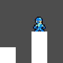

Activate all robots
Change History
| Version | Who | What | When | | ------- | ---------------------- | ------------------- | ---------- | | 0.0.1 | Orhan Küçükyılmaz (OK) | Initial Document | 17.04.2014 | | 0.0.2 | Orhan Küçükyılmaz (OK) | Updated Image | 08.07.2015 | | 0.0.3 | Orhan Küçükyılmaz (OK) | Added Project Goals | 02.07.2017 | | 0.0.4 | Orhan Küçükyılmaz (OK) | Change Game Over | 21.06.2018 | | 0.0.5 | Orhan Küçükyılmaz (OK) | First Jump Robot | 08.07.2018 | | 0.0.6 | Orhan Küçükyılmaz (OK) | Active Robots | 18.07.2018 | | 0.0.7 | Orhan Küçükyılmaz (OK) | Shoot Colide | 06.08.2018 |
Introduction
a jump’n’shoot riddle game
After the Hero’s attack, it’s your duty to…
activate all robots!
Every 'activation-shoot' reduces points. Every activated robot,
machine or trap adds points. Getting hit removes points. If the
player has only *one point left* he gets warned that only one
ONE shoot is left …
~~> … GAME OVER!~~
… AND ATFTER THAT,HE HAS NEGATIVE SCORE

Levels, Robots, and more
In this Section it’s all about the levels the robots and more.
Level 0 - The Start/Menu level
Most games don’t have a playable menu level. What is a playable menu level?, you ask. Good question very good question indeed.
What is a menu?
Before a person can start a game he usually select from a menu what he wants to do. The menu is usually something like:
- Start
- Options
- …(something something)
Here the controls are different to the controls in the game.
Up and down on a joy-pad, joystick or on a keyboard (sometimes “w” for up and “s” for down) toggle between the menu items. With one button on the joy-pad, joystick or keyboard (sometime space or enter) the user select what he wants to do.
In this game the menu is a playable level. Why? So the user uses the actual controls of the game and not some extra controls for the menu. So he can learn the controls for the game early.
Level 0 teaches the player how to play the game, and presents him the first robot to activate.
But first let us take a look at the elements of the first level:

Project goals
No project is ever done if there are no goals set. To know when the Version 1.0.0 is done of this game, some goals are set.
Some of this gaols will be hard set goals, like the number of different levels, robots, boss robots and such. Some goals will be soft, like graphics, sound, all the look and feel.
Levels
A minimum of at least 5 levels
Level Structure
Each level exist of 5 sub-levels. Each new level introduces a new robot, each sub-level introduces a a new sub-version of the robot.
Robots
Start Level (00)
- Start Robot
- the Start Robot has to be activated
- if activated it falls down
- Exit Robot
- the exit robot appears if (all) the robots are activated
- has to be activated also to leave the room
- Reset Robot
- can be activated if to many activation shoots where used to leave level 0-0
- resets the points to seven
- resets the start robot and the exit robot also.
- Continue Robot
- appears if the level 1-0 to 1-4 are mastered
- can be activated to continue the last played level
- Start Boss Robot
- a hidden level? and a hidden boss?
- sleeping tiger hidden dragon
Jump Level (01)
- Jump Robot
- [x] starts jumping when activated
- [x] helps get higher grounds
- [x] blocks passages sometimes
- [ ] open passages by jumping away
- High Jump Robot
- like the jump robot
- just jumps higher
- Water Pump Jump Robot
- shoots water to jump
- can be on his back
- Gravity Jump Robot
- jumps from the ground to the ceiling
- can sometimes be like an elevator
- Jump Boss Robot
- does everything the other jump robots does
- turned up to eleven
TODO
- [x] JUMP ROBOTS COLLIDE BUG
- [x] ROBOTS HAVE TO CHANGE COLOR WHEN ACTIVE
- [ ] SHOOT COLLIDES ANIMATION
- [ ] HIT ANIMATION
- [ ] STATE SHOULD CHANGE DEPENDENT VARIABLES